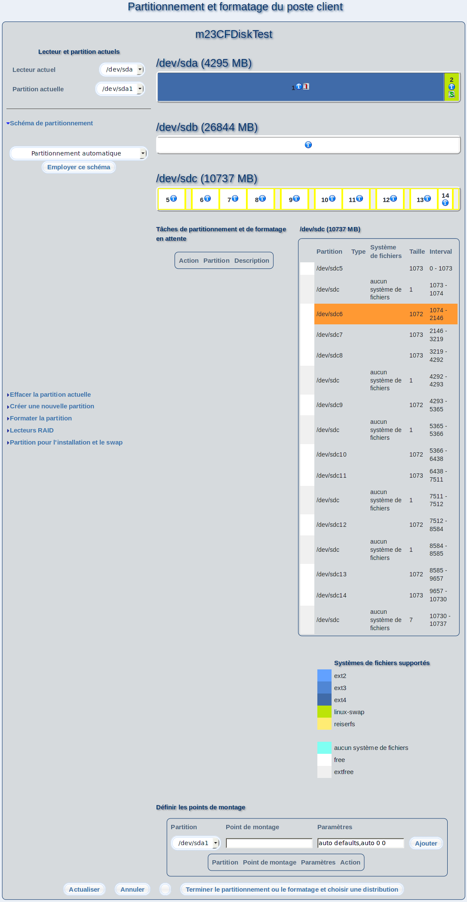

Dans ce dialogue, vous pouvez partitionner et formater votre poste client m23, ainsi qu'administrer des partitions RAIDs. Après avoir effectué les changements, cliquez sur Terminer le partitionnement ou le formatage et choisir une distribution.

Vue d'ensemble
Dans le menu de gauche, apparaissent les outils et fonctions pour la modification des disques durs et des partitions. Lorsque JavaScript est activé, déplacez la souris sur la fonction choisie pour déplier le menu. A droite, le partitionnement et le formatage actuels de tous les disques durs et RAIDs sont affichés. Sous Tâches de partitionnement et de formatage en attente, s'affiche la liste des tâches de partitionnement à accomplir sur le poste client pour parvenir à l'état affiché. A droite, se trouvent des informations plus détaillées concernant le lecteur actuellement positionné sous le pointeur de la souris (si JavaScript est activé, sinon, vous verrez les informations de tous les lecteurs).Dans la légende sous Systèmes de fichiers supportés, sont affichés les types de système de fichiers pouvant être générés et administrés avec m23.
Sous-sections
root
2013-08-18